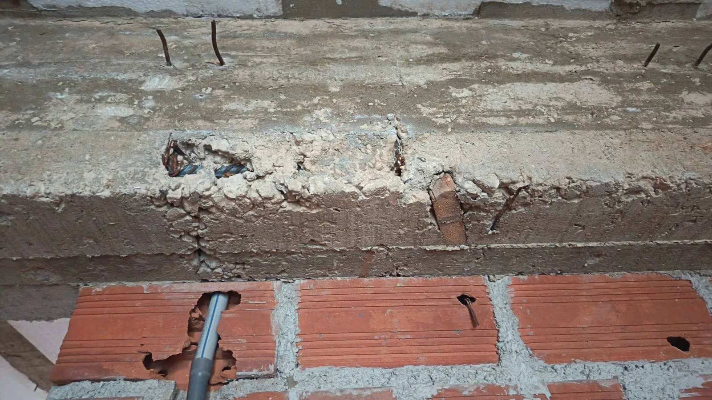
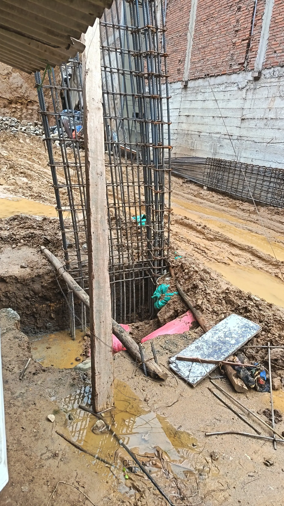
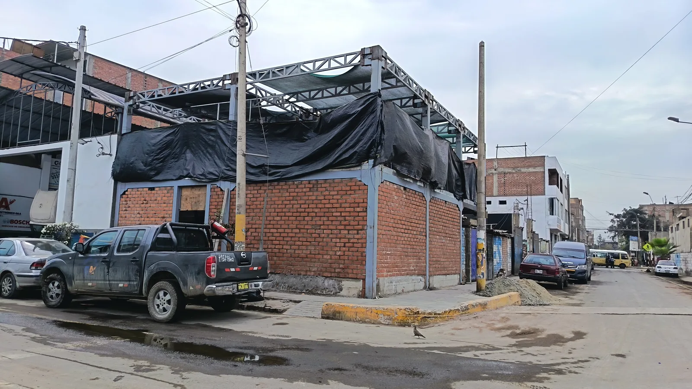
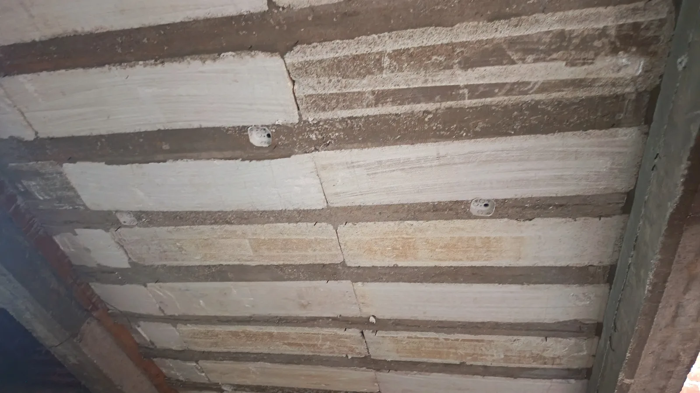
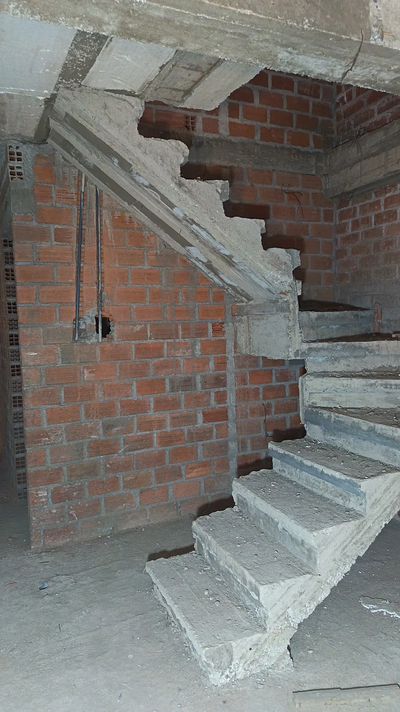

Condiciones que exponen a personas, materiales o continuidad de la obra.
Reglamento Nacional de Edificaciones
Código Nacional de Electricidad
Seguridad y salud en obra
Licencias y trámites municipales, Ley 29090
Albañilería confinada
Biblioteca técnica
Errores frecuentes en obra que conviene detectar antes de que cuesten más.
Reunimos observaciones reales sobre seguridad, estructura, control y orden de obra para ayudarte a identificar riesgos, evitar errores repetidos y decidir con mejor criterio técnico.
Qué encontrarás aquí
Casos que se ven con frecuencia cuando falta control técnico, orden o revisión oportuna.
Decisiones sensibles que no deberían dejarse sin criterio ni seguimiento.
Señales de desorden que luego terminan afectando costo, tiempo y calidad.
Biblioteca educativa
Guías claras sobre errores comunes en autoconstrucción para construir con mejor criterio técnico.
Cangrejeras, recubrimiento y separadoresUna sola foto con varias malas prácticas de obra.
Uso de piedras grandes en zapatasCuando el ahorro aparente debilita la base.
Columnas mal vibradas y cangrejerasVacíos en elementos estructurales.
Mezcla incorrecta del concretoProporciones mal hechas que bajan resistencia.
Falta de recubrimiento en aceroAcero demasiado expuesto al ambiente.
Zapatas mal dimensionadasUna base chica para una carga grande.
No usar planos estructuralesConstruir sin guía técnica clara.
Construcción sin supervisión técnicaObras que avanzan sin validación técnica.
Exceso de agua en el concretoMás agua no significa mejor concreto.
Mala colocación de estribosColumnas y vigas con mal confinamiento.
Empalmes incorrectos de aceroUniones mal resueltas de acero.
Curado deficiente del concretoConcreto que pierde humedad antes de tiempo.
Acero oxidado antes del vaciadoBarras sucias o deterioradas antes de concretar.
Muros sin amarre adecuadoEncuentros mal resueltos que luego se fisuran.
Losa sin apuntalamiento correctoSoporte temporal deficiente antes del vaciado.
Picar vigas o columnas para tuberíasInstalaciones improvisadas que debilitan la estructura.
Caja octogonal dentro de una viguetaCuando una salida eléctrica invade un elemento estructural.
Muros sin columnetas ni viga de amarreAlbañilería levantada sin confinamiento claro.
Observaciones reales
Observaciones técnicas para reconocer errores de obra y corregirlos antes de que afecten seguridad, calidad y costo.

Concreto y albañilería
Cuando en una sola zona se juntan cangrejeras, acero expuesto y apoyos improvisados.
Esta foto permite detectar varias fallas al mismo tiempo: vacíos en el concreto, recubrimiento insuficiente del acero, uso de madera como separador y una unidad tubular mal resuelta en el muro. No es un simple detalle de acabado: es una señal de ejecución deficiente.
- Qué problema genera: menor durabilidad, más exposición del acero y dudas reales sobre la calidad del elemento.
- Qué debería pasar: revisar separadores, recubrimiento, colocación del concreto y compatibilidad de instalaciones antes del vaciado.
- Qué demuestra: que varias malas prácticas pequeñas juntas terminan formando un problema mayor.
Referencia útil: la E.060, numerales 3.3.2, 5.10 y 7.7 exige colocación y compactación adecuadas del concreto, además de recubrimiento mínimo del acero; y la E.070, definición 3.27 y numeral 10.4 regula la unidad tubular y su correcto asentado en albañilería.

Seguridad y entorno
Trabajar sin ordenar el frente de intervención.
Cuando el frente de trabajo se deja sin delimitar, sin ordenar y sin controlar la circulación, el problema no es solo visual. El entorno empieza a jugar en contra de la obra: se vuelve más difícil mover materiales, aumentan los tropiezos y la ejecución pierde claridad.
- Qué problema genera: más exposición a accidentes, interferencias en el tránsito, desorden operativo y pérdida de continuidad en la ejecución.
- Qué debería pasar: delimitar áreas, ordenar materiales, mantener accesos libres y controlar el entorno antes de avanzar con nuevas partidas.
- Qué demuestra: que seguridad, circulación y producción deben planificarse juntas desde el lugar de trabajo.
Referencia útil: la G.050, numeral 7 y 7.1 exige que el lugar de trabajo reúna condiciones que garanticen la seguridad y salud de trabajadores y terceros, y que las áreas se delimiten y organicen para proveer ambientes seguros y saludables.

Albañilería confinada
Levantar muros sobre sobrecimiento sin columnetas ni viga de amarre visibles.
Este error es muy frecuente: se levanta el muro sobre el sobrecimiento y se da por hecho que “ya está bien”. Pero si el muro va a trabajar dentro de un sistema de albañilería confinada, no basta con apoyarlo abajo. También necesita confinamiento vertical y arriostre o amarre horizontal claramente resueltos.
- Qué problema genera: muros más vulnerables, mayor borde libre, peor respuesta frente a cargas perpendiculares o sismo y una falsa sensación de seguridad.
- Qué debería pasar: definir columnetas, vigas o elementos horizontales de amarre y revisar continuidad del sistema antes de seguir elevando o cerrando paños.
- Qué demuestra: que un muro no se vuelve seguro solo por estar apoyado en un sobrecimiento.
Referencia útil: la E.070, definiciones 3.3, 3.6, 3.7, 3.11 y 3.17 define la albañilería confinada, la altura efectiva sin arriostre, el arriostre, el confinamiento y la continuidad vertical de los muros portantes.

Instalaciones eléctricas y estructura
Colocar una caja octogonal dentro de una vigueta del techo aligerado.
En esta observación, la salida eléctrica se ha resuelto invadiendo una vigueta. El problema no es solo eléctrico: también es estructural. Una caja de este tipo no debería improvisarse dentro de un elemento resistente sin detalle coordinado entre estructuras e instalaciones.
- Qué problema genera: reduce sección útil, altera el elemento y puede dejar una zona débil donde la vigueta necesita continuidad.
- Qué debería pasar: definir la ubicación de las salidas en planos de instalaciones y verificar con estructuras que no invadan nervios o elementos resistentes.
- Qué demuestra: que una instalación mal ubicada puede terminar afectando la seguridad y no solo el acabado.
Referencia útil: la EM.010, Art. 3.3 y Art. 8 remite al Código Nacional de Electricidad y exige documentación técnica del proyecto, mientras que la E.060, numeral 6.3.3, 6.3.5 y 6.3.12 limita ductos, insertos y tuberías embebidas para que no debiliten vigas o losas ni obliguen a desplazar el refuerzo.

Escaleras y apoyo estructural
Resolver la llegada de una escalera sobre una vigueta, sin que el detalle estructural se vea claro.
Una escalera no solo necesita un buen arranque. Su llegada también debe transmitir cargas de forma segura. Si el apoyo final parece descansar solo en una vigueta, sin un descanso o zona claramente resuelta por diseño, la observación técnica es válida y no debería ignorarse.
- Qué problema genera: dudas sobre cómo se están transmitiendo las cargas y riesgo de fisuras o mala respuesta del encuentro.
- Qué debería pasar: revisar planos, detalle estructural y capacidad real del apoyo antes de continuar.
- Qué demuestra: que no todo apoyo aparente es un apoyo correctamente diseñado.
Referencia útil: el RNE E.020, Art. 1 y Tabla 1 exige que la edificación y cada una de sus partes resistan las cargas previstas, y la A.010, Art. 29 regula escaleras y descansos.
Siguiente paso
Si en tu obra ya estás viendo señales de desorden, vale la pena revisar antes de seguir avanzando.
Si quieres una mirada técnica sobre tu proyecto, podemos revisar seguridad, estructura, control de ejecución y decisiones clave antes de que el problema crezca.
WhatsApp directo
Solicitar revisión técnica
Podemos revisar seguridad, estructura, control y gestión según el tipo de obra.